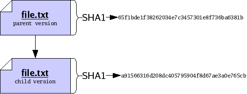
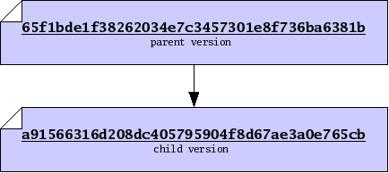
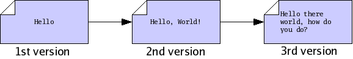

Next: Versions of trees, Previous: Concepts, Up: Concepts [Contents][Index]
Suppose you wish to modify a file file.txt on your computer. You begin with one version of the file, load it into an editor, make some changes, and save the file again. Doing so produces a new version of the file. We will say that the older version of the file was a parent, and the new version is a child, and that you have performed an edit between the parent and the child. We may draw the relationship between parent and child using a graph, where the arrow in the graph indicates the direction of the edit, from parent to child.

We may want to identify the parent and the child precisely, for sake of reference. To do so, we will compute a cryptographic hash function, called SHA1, of each version. The details of this function are beyond the scope of this document; in summary, the SHA1 function takes a version of a file and produces a short string of 20 bytes, which we will use to uniquely identify the version1. Now our graph does not refer to some “abstract” parent and child, but rather to the exact edit we performed between a specific parent and a specific child.

When dealing with versions of files, we will dispense with writing out “file names”, and identify versions purely by their SHA1 value, which we will also refer to as their file ID. Using IDs alone will often help us accommodate the fact that people often wish to call files by different names. So now our graph of parent and child is just a relationship between two versions, only identified by ID.

Version control systems, such as monotone, are principally concerned
with the storage and management of multiple versions of some files.
One way to store multiple versions of a file is, literally, to save a
separate complete copy of the file, every time you make a
change. When necessary, monotone will save complete copies of your
files, compressed with the zlib compression format.

Often we find that successive versions of a file are very similar to one another, so storing multiple complete copies is a waste of space. In these cases, rather than store complete copies of each version of a file, we store a compact description of only the changes which are made between versions. Such a description of changes is called a delta.
Storing deltas between files is, practically speaking, as good as
storing complete versions of files. It lets you undo changes from a
new version, by applying the delta backwards, and lets your friends
change their old version of the file into the new version, by applying
the delta forwards. Deltas are usually smaller than full files, so
when possible monotone stores deltas, using a modified xdelta
format. The details of this format are beyond the scope of this
document.

We say SHA1 values are “unique” here, when in fact there is a small probability of two different versions having the same SHA1 value. This probability is very small, so we discount it.
Next: Versions of trees, Previous: Concepts, Up: Concepts [Contents][Index]